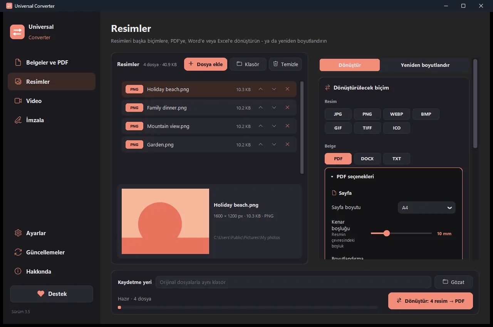

Dosyalarınızı kendi cihazınızda dönüştürün
Resimler, belgeler, video ve ses, PDF'ler ve Excel'e tablolar, hepsi tek bir uygulamada. Hiçbir şey yüklenmez: dosyalarınız cihazınızdan hiç çıkmaz.
Nasıl yüklenir ve güncellenir
- İndirilen .dmg dosyasını açın ve Universal Converter'ı Uygulamalar klasörüne sürükleyin.
- Uygulamayı açın. İlk seferde macOS, Apple tarafından imzalanmadığı için onu engeller: Bitti'ye tıklayın.
- Sistem Ayarları > Gizlilik ve Güvenlik'i açın, aşağı kaydırın, Yine de Aç'a tıklayın ve parolanızı girin. Bunu yalnızca bir kez yaparsınız.
Güncellemeler: uygulama ilk açıldığında izin verirseniz her açılışta yeni sürümleri denetler, dijital imzalarını doğrular ve siz seçtiğinizde yükler.
Nasıl yüklenir ve güncellenir
- Telefonunuzda Android için indir'e dokunun.
- İndirilen dosyayı açın. Android sorarsa tarayıcınızın veya dosya yöneticinizin uygulama yüklemesine izin verin.
- Yükle'ye dokunun.
Güncellemeler: uygulama yaklaşık günde bir denetler ve yeni bir sürüm hazır olduğunda size haber verir. Aynı şekilde indirip eskisinin üzerine yükleyin; ayarlarınız korunur.
Nasıl yüklenir ve güncellenir
- .AppImage dosyasını indirin.
- Çalıştırılabilir yapın: sağ tıklayıp Özellikler > İzinler'i açın ve program olarak çalıştırmaya izin verin (ya da terminalde: chmod +x Universal-Converter-*.AppImage).
- Çift tıklayın. Hiçbir şey yüklenmez: uygulama bu tek dosyadır.
Güncellemeler: ilk açılışta izin verirseniz uygulama her başlangıçta yeni sürümleri denetler, dijital imzalarını doğrular ve AppImage dosyasını bulunduğu yerde değiştirir.

Gizli
Her şey cihazınızda çalışır. Yükleme yok, sırada bekleme yok, boyut sınırı yok.
Ücretsiz
Kullanımı ücretsiz; reklam, hesap ve filigran yok.
34 dil
İngilizce, Yunanca, İspanyolca, İtalyanca, Almanca, Fransızca, Portekizce (Portekiz ve Brezilya), Lehçe, Rusça, Arapça, İbranice, Çince, Japonca, Korece, Tamilce, Afrikaanca, Yorubaca, Hausaca, Hintçe, Endonezce, Türkçe, Vietnamca, İsveççe, Felemenkçe, Danca, Ukraynaca, Çekçe, Rumence, Bulgarca, Norveççe, Malayca, Filipince ve Svahili.
Tek pencerede beş araç

Belgeler ve PDF
PDF, Word, ODT, RTF, TXT, Markdown, HTML, EPUB, PowerPoint ve Excel arasında dönüştürün. Sayfaları resme çevirin ve birkaç dosyayı tek PDF'de birleştirin. Yazı tipleri, boyutlar ve renkler korunur. PDF'leri seçtiğiniz boyuta küçültün. Taramalar ve doldurulmuş formlar, sayfadaki gibi yerleştirilmiş düzenlenebilir metin ve tablolara dönüşür. Banka ekstrelerindeki gibi çizgisiz tablolar bile Word'e gerçek tablolar olarak aktarılır; eski Word (.doc) ve PowerPoint (.ppt) dosyaları da açılır.
Resimler
JPG, PNG, WEBP, TIFF, BMP, GIF ve ICO arasında dönüştürün. Piksel, yüzde veya dosya boyutuna göre yeniden boyutlandırın, resimleri PDF veya Word dosyasında birleştirin ve resimlerdeki metni okuyun (OCR). PDF de eklenebilir: her sayfa bir resim olur.

Video
Videoları MP4, MKV, WebM, MOV ve AVI arasında dönüştürün ve AV1, H.265, H.264 veya VP9 ile sıkıştırın. Kesin, kırpın, döndürün ve yeniden boyutlandırın, GIF yapın, kareleri resim olarak kaydedin ya da yalnızca sesi MP3, M4A, FLAC, WAV, OGG veya Opus olarak saklayın. Birden çok videoda her birinin kendi ayarları olabilir. Android'de: MP4, MKV, WebM, MOV veya GIF ya da ses olarak M4A, OGG veya WAV; kesin, kırpın, döndürün, yeniden boyutlandırın ve kareleri kaydedin.

Excel
PDF'lerden, taramalardan ve fotoğraflardan tabloları Excel'e veya CSV'ye aktarın: banka ekstreleri, faturalar, fiyat listeleri. Türkçe, İngilizce, Yunanca ve 30'dan fazla başka dili okur.

İmzala
PDF'leri imzalayın ve formları doldurun. Adınızı el yazısı stilinde yazın, imzanızı çizin ya da fotoğrafını kullanın. Uygulama imza çizgilerini kendisi bulur ya da imzanın, parafın, tarihin, metnin veya onay işaretlerinin gideceği yere tıklar veya dokunursunuz. Birçok dosyayı aynı anda imzalayın; orijinallere dokunulmaz.
- Mümkün olduğunda video için ekran kartınızı kullanır: genellikle 5 ila 20 kat daha hızlı.
- Klasörlerin tamamını sürükleyin: her dosya tek seferde dönüştürülür.
- Bir dosya başka bir sekmeye aitse söyler ve onu tek tıkla oraya taşır.
- Yeni sürümleri haber verir; Windows, Mac ve Linux'ta bunları dijital olarak doğrulayıp sizin için yükleyebilir.
- Cihazınıza uyan açık ve koyu görünüm.
Nasıl çalışır
- Universal Converter'ı açın ve soldan Belgeler ve PDF · Resimler · Video · İmzala sekmesini seçin.
- Dosyalarınızı veya bir klasörün tamamını pencereye sürükleyin ya da Dosya ekle düğmesine tıklayın.
- Dönüştür düğmesine tıklayın. Yeni dosyalar orijinallerin yanına ya da seçtiğiniz klasöre kaydedilir.
Neler yapabilir
- Bir PDF'yi Word'e dönüştürün
- Word belgelerini PDF'ye dönüştürün
- Birkaç dosyayı tek bir PDF'de birleştirin
- Bir PDF'yi seçtiğiniz boyuta sıkıştırın
- PDF'yi 100 KB, 200 KB veya çevrimiçi formların istediği herhangi bir boyuta sıkıştırın
- PDF sayfalarını JPG resimlere dönüştürün
- Taranmış bir belgeyi düzenlenebilir bir Word dosyasına çevirin
- Resimleri JPG, PNG, WEBP ve diğerleri arasında dönüştürün
- Resimleri yeniden boyutlandırın ya da bir dosya boyutuna küçültün
- Fotoğrafı veya imzayı 20 KB, 50 KB ya da tam piksel boyutuna getirin
- Fotoğrafları tek bir PDF'de birleştirin
- JPG'den 100 KB altı PDF'ye
- Bir resimdeki metni kopyalayın (OCR)
- Bir videoyu yüklemeden sıkıştırın
- Videoları MP4, MKV, WebM, MOV ve AVI arasında dönüştürün
- Bir videonun sesini MP3 olarak kaydedin
- Bir videodan GIF yapın
- Bir PDF'deki tabloları Excel'e aktarın
- Bir banka ekstresi PDF'sini Excel'e dönüştürün
- PDF faturalardaki tabloları Excel'e çıkarın
- Bir PDF'yi imzalayın
- Bir PDF formunu doldurun
Sorular
Gerçekten ücretsiz mi?
Evet. Universal Converter'ın kullanımı ücretsizdir; reklam, hesap ve süre sınırı yoktur. İşinize yararsa gelişimini gönüllü bir katkıyla destekleyebilirsiniz, ama buna asla zorunlu değilsiniz.
Dosyalarım bir yere yükleniyor mu?
Hayır. Her dönüştürme kendi cihazınızda yapılır, bu yüzden internet bağlantısı olmadan da çalışır. Uygulama yalnızca güncellemeleri denetlemek, seçtiğiniz metin tanıma alfabelerini indirmek ve, izin verirseniz, anonim hata raporları göndermek için internete bağlanır.
İndirmek güvenli mi?
Evet. Bu sayfaya konmadan önce her sürümün Windows, Mac, Linux ve Android indirmeleri VirusTotal'da yaklaşık 60–70 antivirüs motoruyla taranır; her indirme düğmesinin altındaki bağlantı o dosyanın raporunu açar. Uygulamada reklam yoktur, kişisel veri toplamaz ve Microsoft Store sürümü ayrıca Microsoft tarafından denetlenip imzalanır.
Windows bir SmartScreen uyarısı gösteriyor. Bu normal mi?
Evet. Yükleyici henüz kod imzalı değil, bu yüzden Windows onu tanımıyor. “Ek bilgi”yi, ardından “Yine de çalıştır”ı seçin. Sonraki güncellemeleri uygulamanın kendisi dijital olarak doğrular. Ya da uyarı göstermeyen Microsoft Store'dan yükleyin.
Mac'te nasıl açarım?
İndirilen dosyayı açın ve Universal Converter'ı Uygulamalar klasörüne sürükleyin. Uygulama Apple tarafından imzalanmadığı için ilk açışta macOS onu engeller: Bitti'ye tıklayın, ardından Sistem Ayarları > Gizlilik ve Güvenlik'i açın, “Yine de Aç”a tıklayın ve parolanızı girin. Bunu yalnızca bir kez yaparsınız.
Android'e nasıl yüklerim?
APK'yı telefonunuza indirin, açın ve sorulduğunda yüklemeye izin verin (Android 10 veya üzeri). 34 dilin tamamı yerleşiktir; uygulamanın Ayarlar bölümünden birini seçin. Yeni bir sürüm çıktığında uygulama size haber verir.
Hangi dilleri konuşuyor?
Uygulama İngilizce, Yunanca, İspanyolca, İtalyanca, Almanca, Fransızca, Portekizce (Portekiz ve Brezilya), Lehçe, Rusça, Arapça, İbranice, Çince, Japonca, Korece, Tamilce, Afrikaanca, Yorubaca, Hausaca, Hintçe, Endonezce, Türkçe, Vietnamca, İsveççe, Felemenkçe, Danca, Ukraynaca, Çekçe, Rumence, Bulgarca, Norveççe, Malayca, Filipince ve Svahili dillerindedir. Dili yükleyicide ya da daha sonra Ayarlar'da seçersiniz.